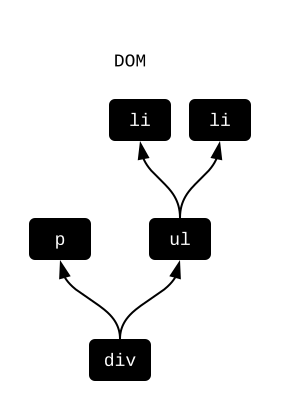
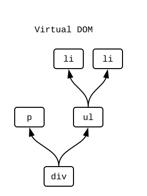
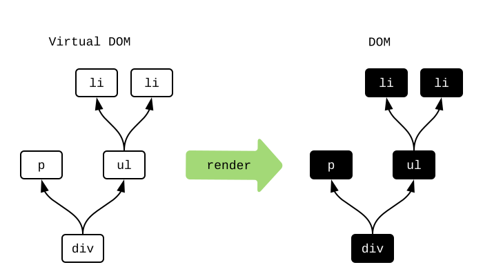
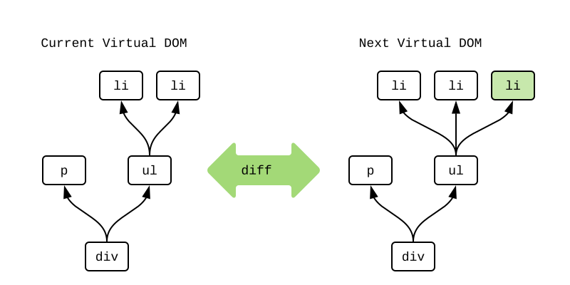
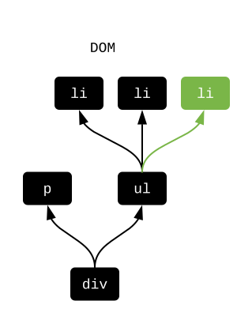
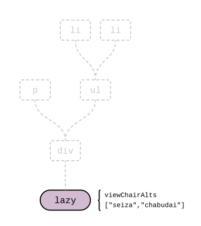

Html.Lazy
Para mostrar cosas en pantalla usamos el paquete elm/html. Y para entender cómo optimizar su uso, primero tenemos que aprender cómo funciona.
¿Qué es el DOM?
Cuando creamos un archivo HTML, escribimos algo como esto:
<div>
<p>Chair alternatives include:</p>
<ul>
<li>seiza</li>
<li>chabudai</li>
</ul>
</div>
Esto genera una estructura DOM así tras bambalinas:

Las cajas negras representan pesados objetos DOM, con cientos de atributos. Y cuando uno de ellos cambia, puede gatillar repintado y redistribución del contenido en la página, y tardar un tiempo considerable.
¿Qué es un DOM virtual?
Si estamos creando un archivo Elm, podemos usar elm/html para escribir algo así:
viewChairAlts : List String -> Html msg
viewChairAlts chairAlts =
div []
[ p [] [ text "Chair alternatives include:" ]
, ul [] (List.map viewAlt chairAlts)
]
viewAlt : String -> Html msg
viewAlt chairAlt =
li [] [ text chairAlt ]
Lo que viewChairAlts ["seiza", "chabudai"] está haciendo es producir una estructura de “DOM virtual” por detrás:

Las cajas blancas representan objetos JavaScript livianos. Sólo contienen los atributos que especificamos. Su creación nunca causa repintado o redistribución en la página. El punto es que, en comparación con nodos del DOM, estos son mucho más livianos de manejar.
Pintado
Si sólo estamos manipulando nodos virtuales en Elm, ¿cómo se convierte esto al DOM que vemos en pantalla? Al inicializar, los programas Elm hacen esto:
- Llaman a
initpara obtener el valorModelinicial. - Llaman a
viewpara obtener los nodos virtuales iniciales.
Teniendo estos nodos virtuales, construímos una réplica exacta en el DOM real:

Muy bien, pero ¿y cuando algo cambia? Reconstruir el DOM completo en cada fotograma no es buena idea. Entonces, ¿qué hacemos?
Comparación de cambios
Teniendo ya el DOM inicial, empezamos a trabajar usando nodos virtuales principalmente. Cuando el valor Model cambia, volvemos a correr view. Después, comparamos los nodos virtuales resultantes para determinar cuáles son los cambios mínimos a realizar en el DOM real.
Imagina que el Model tiene una nueva alternativa de silla, y queremos añadir un nuevo nodo li para ésta. Por detrás, Elm compara los nodos virtuales actuales y los nuevos nodos virtuales para detectar cambios:

Se dio cuenta de que un tercer nodo li fue añadido, el que está marcado en verde. Ahora Elm sabe exactamente cómo modificar el DOM real para hacer que coincidan. Sólo falta agregar el nuevo li:

Este proceso de comparación hace posible tocar el DOM lo menos posible. Y si no hay diferencias, entonces no hace falta tocar el DOM en absoluto. Este proceso minimiza el repintado y la redistribución de contenido que ocurriría de otro modo.
Pero, ¿podemos hacer aún menos trabajo?
Html.Lazy
El módulo Html.Lazy nos permite evitar siquiera construir los nodos virtuales. La pieza central es la función lazy:
lazy : (a -> Html msg) -> a -> Html msg
Volviendo al ejemplo de las sillas, hicimos una llamada a viewChairAlts ["seiza", "chabudai"], pero bien podemos hacer algo como lazy viewChairAlts ["seiza", "chabudai"]. La versión que usa lazy almacena un sólo nodo “perezoso”, así:

Este nodo guarda una referencia a la función y a sus argumentos. Elm puede construir la estructura completa usando la función y los argumentos, pero no siempre hace falta.
Uno de los superpoderes de Elm es la garantía de que dados los mismos argumentos, el resultado es siempre el mismo. Dado esto, cuando comparamos dos nodos “perezosos” preguntamos: ¿es la función la misma? ¿Son los argumentos los mismos? Si son todos los mismos, sabemos con seguridad que los nodos virtuales producidos son también iguales. Podemos ahorrarnos el trabajo de crear los nodos virtuales. Si algo en la ecuación cambia, simplemente construímos los nodos y procedemos a hacer la comparación habitual.
Nota: ¿Cuándo son dos valores “lo mismo”? Para optimizar el rendimiento, la implementación compara usando el operador
===de JavaScript:
- Se usa la igualdad estructural para
Int,Float,String,Char, yBool.- Se usa la igualdad de referencia para registros, listas, tipos personalizados, diccionarios, etc.
La igualdad estructural significa que
4es lo mismo que4sin importar cómo se produjeron esos valores. La igualdad de referencia significa que el puntero en memoria debe ser el mismo. Usar igualdad de referencia es de complejidad O(1), o sea muy óptimo, aún si la estructura de datos tuviera miles o millones de entradas. Esta decisión fue hecha principalmente para asegurarnos de que usarlazynunca ralentice el código sin querer. Todos los chequeos que se realizan son súper livianos.
Uso
El lugar ideal para poner nodos lazy es cerca de la raíz de tu aplicación. Muchas aplicaciones tienen regiones visuales diferenciadas, como una cabecera, barras laterales, resultados de búsqueda, etc. Y cuando un usuario interactúa con una de éstas, normalmente no influye en las demás. Así se demarcan líneas donde se hace natural usar lazy.
Por ejemplo, en mi implementación de TodoMVC, view se define así:
view : Model -> Html Msg
view model =
div
[ class "todomvc-wrapper"
, style "visibility" "hidden"
]
[ section
[ class "todoapp" ]
[ lazy viewInput model.field
, lazy2 viewEntries model.visibility model.entries
, lazy2 viewControls model.visibility model.entries
]
, infoFooter
]
Fíjate en que el ingreso de texto (viewInput), los ítems en la lista (viewEntries) y los controles (viewControls) todos forman nodos “perezosos” separados. Así, puedo tipear en el campo de texto sin nunca construir nodos virtuales para la lista o los controles, porque no tienen cambios. Por lo tanto, el primer consejo es trata de usar nodos lazy en la raíz de tu aplicación.
También puede resultar útil usar lazy en listas con muchos ítems. La aplicación TodoMVC se trata de ir añadiendo ítems a una lista de pendientes. Eventualmente podríamos tener cientos de ítems, pero cada uno cambiará muy infrecuentemente. Los ítems de esta lista son grandes candidatos para hacerlos “perezosos”. Al cambiar viewEntry entry a lazy viewEntry entry podemos ahorrarnos un montón de infructuoso trajín en memoria. Dicho esto, el segundo consejo es trata de usar nodos lazy en estructuras repetitivas donde cada ítem cambia poco frecuentemente.
En resumen
Tocar el DOM es mucho más costoso que cualquier otra operación que pueda ocurrir en una interfaz de usuario normal. Basado en mis comparativas de rendimiento, no importa lo mucho que optimicemos nuestras estructuras de datos, al final lo único que importa es qué tan bien usemos lazy.
En la próxima página vamos a aprender una técnica para usar lazy aún mejor.